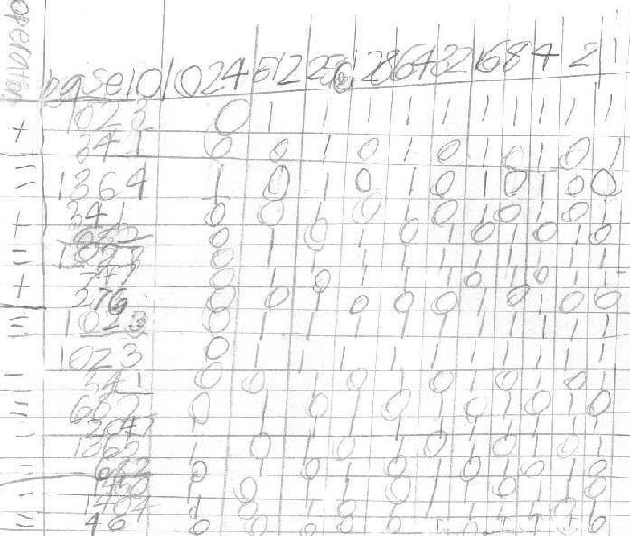
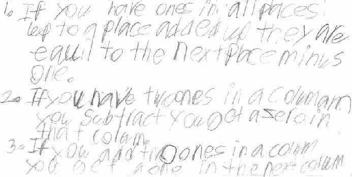

Ross does arithmetic in Binary
Ross is self motivated; Don did not ask him to do these, he just did these on his own. The operations are on the left. He only made one error which he corrected. He checked all his work and wrote about what he found below.

